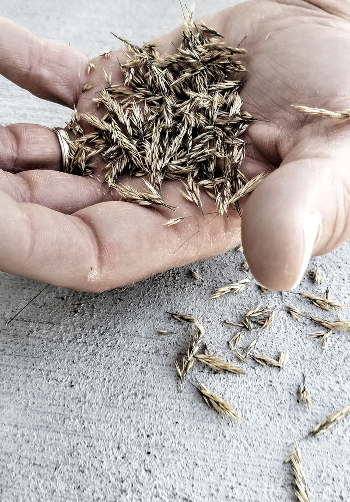

here's some of my stuff.
The Grapes of Wrath Book Cover Design

I created a book cover for the classic novel, The Grapes of Wrath by John Steinbeck. This project consisted of taking several of my own photographs for the design and manipulating them in a way that would create a symbolic meaning for the book.
